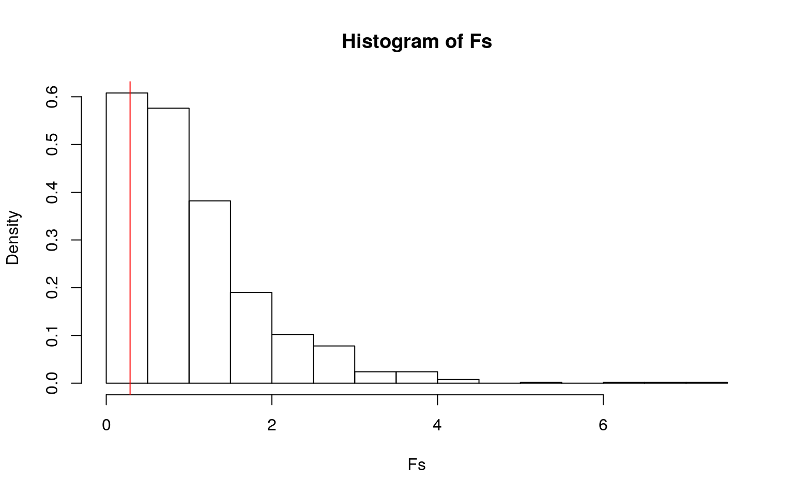
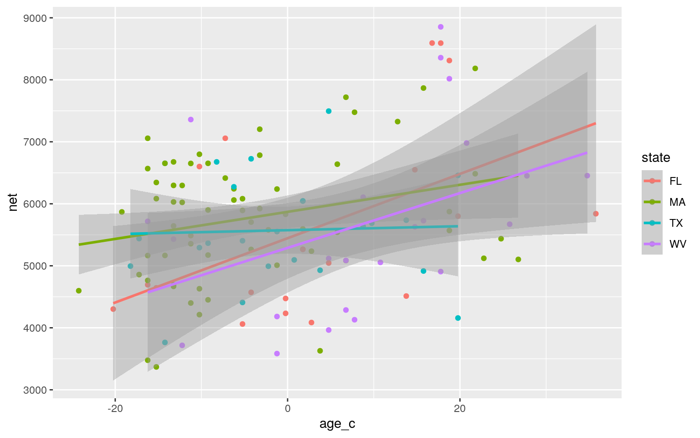
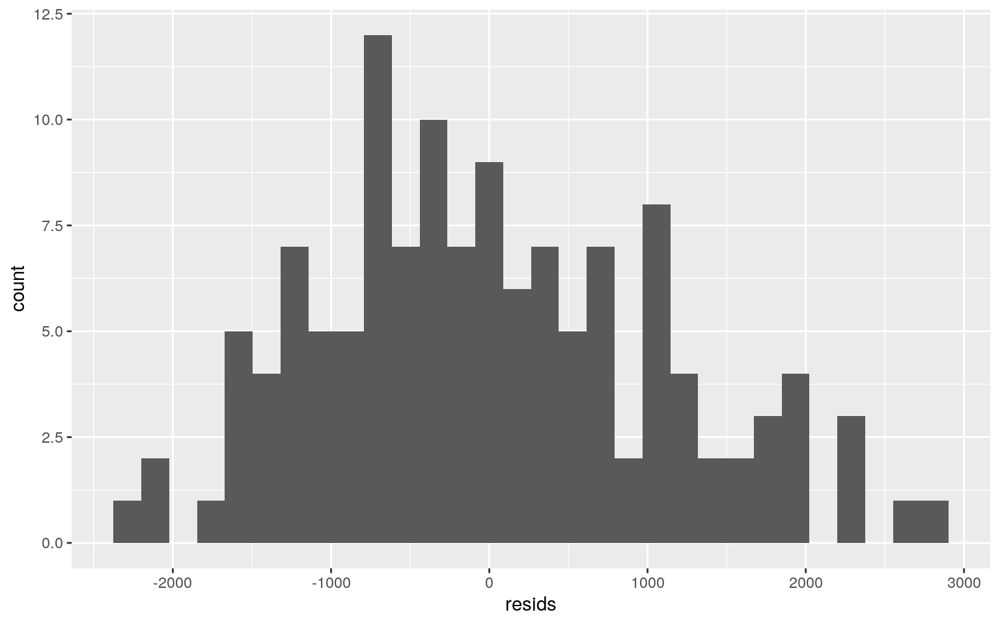
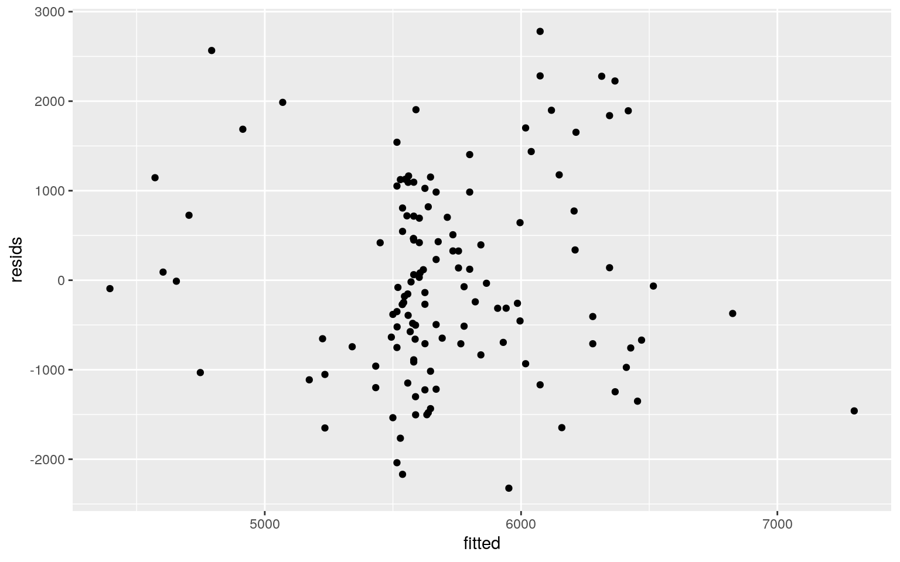
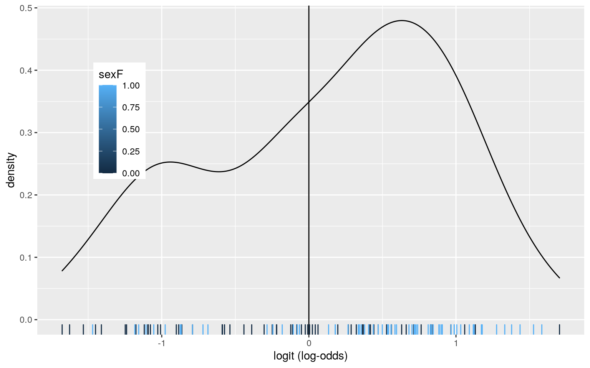
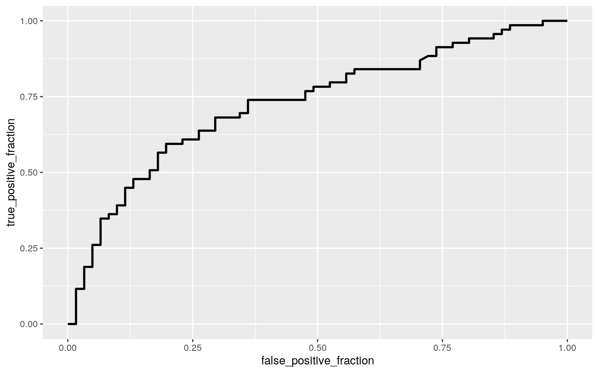

library(readxl)
tenmile <- read_excel("tenmile.xlsx")
tenmile <- tenmile %>% na.omit()
tenmile <- tenmile %>% filter(state=="TX"|state=="MA"|state=="WV"|state=="FL")
tenmile <- tenmile %>% mutate(sexF=ifelse(sex=="F",1,0))
tenmile %>% filter(state=="FL")## # A tibble: 20 x 6
## state time net age sex sexF
## <chr> <dbl> <dbl> <dbl> <chr> <dbl>
## 1 FL 4867 4694 23 M 0
## 2 FL 4724 4644 24 M 0
## 3 FL 7204 7057 32 M 0
## 4 FL 4077 4061 34 M 0
## 5 FL 4714 4473 39 M 0
## 6 FL 5578 5266 41 M 0
## 7 FL 4115 4085 42 M 0
## 8 FL 4533 4512 53 M 0
## 9 FL 6851 6549 54 M 0
## 10 FL 8592 8592 57 M 0
## 11 FL 8643 8311 58 M 0
## 12 FL 5869 5801 59 M 0
## 13 FL 6239 5840 75 M 0
## 14 FL 4483 4302 19 F 1
## 15 FL 6922 6601 29 F 1
## 16 FL 4666 4572 35 F 1
## 17 FL 4261 4233 39 F 1
## 18 FL 5577 5266 41 F 1
## 19 FL 5045 5045 44 F 1
## 20 FL 8593 8593 56 F 1tenmile is a dataset of statistics from the 2005 Cherry Blossom 10 Mile Run in Washington, D.C. After editing tenmile to fit the project criteria, it has 6 variables: state, time, net, age, sex, and sexF, with each observation representing a runner. state is the state the runner resides in, time is the time in seconds from starting gun to finish line, net is the time in seconds from starting line to finish line, age is the age of the runner in years, sex is the sex of the runner, and sexF is a binomial representation of sex where M=0 and F=1. There are 130 observations representing 4 states.
#MANOVA
man1<-manova(cbind(time,net,age,sexF)~state, data=tenmile)
summary(man1)## Df Pillai approx F num Df den Df Pr(>F)
## state 3 0.21766 2.4447 12 375 0.004487 **
## Residuals 126
## ---
## Signif. codes: 0 '***' 0.001 '**' 0.01 '*' 0.05 '.' 0.1
' ' 1#univariate ANOVAs
summary.aov(man1)## Response time :
## Df Sum Sq Mean Sq F value Pr(>F)
## state 3 1629436 543145 0.3484 0.7904
## Residuals 126 196451291 1559137
##
## Response net :
## Df Sum Sq Mean Sq F value Pr(>F)
## state 3 907754 302585 0.2188 0.8832
## Residuals 126 174241243 1382867
##
## Response age :
## Df Sum Sq Mean Sq F value Pr(>F)
## state 3 3185.7 1061.90 6.5661 0.0003683 ***
## Residuals 126 20377.4 161.73
## ---
## Signif. codes: 0 '***' 0.001 '**' 0.01 '*' 0.05 '.' 0.1
' ' 1
##
## Response sexF :
## Df Sum Sq Mean Sq F value Pr(>F)
## state 3 3.3066 1.10219 4.7772 0.00346 **
## Residuals 126 29.0704 0.23072
## ---
## Signif. codes: 0 '***' 0.001 '**' 0.01 '*' 0.05 '.' 0.1
' ' 1#post-hoc t-tests
pairwise.t.test(tenmile$age,tenmile$state, p.adj="none")##
## Pairwise comparisons using t tests with pooled SD
##
## data: tenmile$age and tenmile$state
##
## FL MA TX
## MA 0.021 - -
## TX 0.287 0.255 -
## WV 0.158 4.4e-05 0.011
##
## P value adjustment method: nonepairwise.t.test(tenmile$sexF,tenmile$state, p.adj="none")##
## Pairwise comparisons using t tests with pooled SD
##
## data: tenmile$sexF and tenmile$state
##
## FL MA TX
## MA 0.0079 - -
## TX 0.3043 0.1156 -
## WV 0.7564 0.0016 0.1652
##
## P value adjustment method: none#adjusted alpha
.05/17## [1] 0.002941176#type I error
1-(.95^17)## [1] 0.5818797#testing assumptions
library(rstatix)
group <- tenmile$state
DVs <- tenmile %>% select(time,net,age,sexF)
#test multivariate normality for each group (null: assumption met)
sapply(split(DVs,group), mshapiro_test)## FL MA TX WV
## statistic 0.8836305 0.9550574 0.9138701 0.8801879
## p.value 0.0205751 0.0219332 0.04282453 0.01009613The MANOVA was significant (p=0.004487), so there is a mean difference across levels of the categorical variable in at least one numerical variable. After performing the univariate ANOVAs, age and sexF were shown to be the significant variables (p=0.0003683 and p=0.00346, respectively). Post-hoc t-tests were performed next, and an adjusted bonferroni alpha of .05/17=0.00294 was used to account for multiple comparisons. If unadjusted, the probability of at least one type I error would be 0.582. MA and WV differ significantly from each other in terms of age (p=4.4e-05) and sexF (p=0.0016). In total, 1 MANOVA, 2 ANOVAs, and 12 t-tests were conducted. There are many MANOVA assumptions including independent observations and random samples, multivariate normality, homogeneity of covariances, linear relationships among DVs, no extreme uni/multi-variate outliers, and no multicollinearity. The tenmile dataset did not meet the assumption for multivariate normality (p<0.05), and because there are so many assumptions, it also likely did not meet all the other ones.
Null hypothesis: For all four DVs (time, net, age, sex), means for each state are equal
Alternative hypothesis: For at least one DV, at least one state mean is different
library(vegan)
dists <- tenmile %>% select(time,net,age,sexF) %>% dist()
adonis(dists~state,data=tenmile)##
## Call:
## adonis(formula = dists ~ state, data = tenmile)
##
## Permutation: free
## Number of permutations: 999
##
## Terms added sequentially (first to last)
##
## Df SumsOfSqs MeanSqs F.Model R2 Pr(>F)
## state 3 2540379 846793 0.28781 0.00681 0.839
## Residuals 126 370712941 2942166 0.99319
## Total 129 373253320 1.00000#compute observed F
SST <- sum(dists^2)/130
SSW <- tenmile %>% group_by(state) %>% select(state,time,net,age,sexF) %>% do(d=dist(.[-1],"euclidean")) %>% ungroup() %>% summarize(sum(d[[1]]^2)/20 + sum(d[[2]]^2)/63 + sum(d[[3]]^2)/24 + sum(d[[4]]^2)/23) %>% pull
F_obs<-((SST-SSW)/(4-1))/(SSW/(130-4))
#compute null dist for F
Fs<-replicate(1000,{
new <- tenmile %>% mutate(state=sample(state))
SSW <- new %>% group_by(state) %>% select(state,time,net,age,sexF) %>% do(d=dist(.[-1],"euclidean")) %>% ungroup() %>%
summarize(sum(d[[1]]^2)/20 + sum(d[[2]]^2)/63 + sum(d[[3]]^2)/24 + sum(d[[4]]^2)/23) %>% pull
((SST-SSW)/3)/(SSW/126)
})
#p-value
mean(Fs>F_obs)## [1] 0.851#plot null dist and p-value
hist(Fs,prob = T); abline(v=F_obs, col="red", add=T)
The result of the PERMANOVA for numeric variables in tenmile is not significant using the adonis function (p=0.821) or calculating by hand (p=0.838). This means we fail to reject the null hypothesis and the mean differences across all state groups are equal in terms of the four numeric variables (time, net, age, sex).
#mean center variables
tenmile$net_c <- tenmile$net - mean(tenmile$net,na.rm=T)
tenmile$age_c <- tenmile$age - mean(tenmile$age,na.rm=T)
fit <- lm(net~age_c*state,data = tenmile)
summary(fit)##
## Call:
## lm(formula = net ~ age_c * state, data = tenmile)
##
## Residuals:
## Min 1Q Median 3Q Max
## -2323.3 -734.8 -115.9 718.4 2779.7
##
## Coefficients:
## Estimate Std. Error t value Pr(>|t|)
## (Intercept) 5444.946 256.371 21.239 < 2e-16 ***
## age_c 51.857 17.753 2.921 0.00416 **
## stateMA 425.106 295.995 1.436 0.15351
## stateTX 129.708 342.812 0.378 0.70582
## stateWV -155.857 379.510 -0.411 0.68203
## age_c:stateMA -30.028 21.102 -1.423 0.15729
## age_c:stateTX -48.659 27.422 -1.774 0.07848 .
## age_c:stateWV -7.666 24.857 -0.308 0.75830
## ---
## Signif. codes: 0 '***' 0.001 '**' 0.01 '*' 0.05 '.' 0.1
' ' 1
##
## Residual standard error: 1113 on 122 degrees of freedom
## Multiple R-squared: 0.1372, Adjusted R-squared: 0.08771
## F-statistic: 2.772 on 7 and 122 DF, p-value: 0.01042ggplot(tenmile,aes(x=age_c, y=net, group = state)) + geom_point(aes(color=state)) + geom_smooth(method="lm",aes(color=state))
#linearity
resids <- fit$residuals
ggplot()+geom_histogram(aes(resids))
fitted <- fit$fitted.values
ggplot()+geom_point(aes(fitted,resids))
#normality
shapiro.test(resids)##
## Shapiro-Wilk normality test
##
## data: resids
## W = 0.98438, p-value = 0.1425#homoskedasticity
library(lmtest)
bptest(fit)##
## studentized Breusch-Pagan test
##
## data: fit
## BP = 14.675, df = 7, p-value = 0.0404library(sandwich)
coeftest(fit, vcov=vcovHC(fit))##
## t test of coefficients:
##
## Estimate Std. Error t value Pr(>|t|)
## (Intercept) 5444.9463 289.9466 18.7791 < 2e-16 ***
## age_c 51.8569 25.5257 2.0316 0.04437 *
## stateMA 425.1063 325.1298 1.3075 0.19350
## stateTX 129.7077 349.4639 0.3712 0.71116
## stateWV -155.8572 492.1165 -0.3167 0.75201
## age_c:stateMA -30.0279 28.3735 -1.0583 0.29201
## age_c:stateTX -48.6586 32.8215 -1.4825 0.14078
## age_c:stateWV -7.6659 34.1719 -0.2243 0.82287
## ---
## Signif. codes: 0 '***' 0.001 '**' 0.01 '*' 0.05 '.' 0.1
' ' 1SST <- sum((tenmile$net-mean(tenmile$net))^2) #SS Total
SSR <- sum((fit$fitted.values-mean(tenmile$net))^2) #SS Regression
SSR/SST## [1] 0.1372123summary(fit)$r.sq## [1] 0.1372123The predicted net run time is 5444.95 seconds for FL residents of an average age. The estimated slope for age on net time for non-Floridians is 51.86. For people with average age, people from MA have an average/predicted net time that is 425.11 seconds longer than non-MA residents. For people with average age, people from TX have an average/predicted net time that is 129.71 seconds longer than non-TX residents. For people with average age, people from WV have an average/predicted net time that is 155.86 seconds shorter than non-WV residents. The slope of age on net time for MA residents is 30.03 smaller than for FL residents. The slope of age on net time for TX residents is 48.66 smaller than for FL residents. The slope of age on net time for WV residents is 7.67 smaller than for FL residents.
The assumption of linearity was met when checked by plotting the residuals and residuals vs. fitted values. The assumption of homoskedasticity was not met when checked using the Breuch-Pagan test (p=0.0404). The assumption of normality was met when checked using the Shapiro-Wilk normality test (p=0.1425).
After robust SEs, the significant coefficients were the same. The predicted net run time is 5444.95 seconds for FL residents of an average age (significant, p<2e-16). The estimated slope for age on net time for non-Floridians is 51.86 (significant, p=0.04437). The model explains a proportion of 0.1372 of the variation in the outcome.
samp_distn <- replicate(5000, {
boot_dat <- sample_frac(tenmile, replace=T)
fit <- lm(net~age_c*state,data=boot_dat)
coef(fit)
})
samp_distn %>% t %>% as.data.frame %>% summarize_all(sd) ## (Intercept) age_c stateMA stateTX stateWV age_c:stateMA
age_c:stateTX age_c:stateWV
## 1 285.3576 24.20826 315.8341 339.508 476.7732 27.19016
30.51728 33.52124samp_distn %>% t %>% as.data.frame %>% pivot_longer(1:2) %>% group_by(name) %>%
summarize(lower=quantile(value,.025), upper=quantile(value,.975))## # A tibble: 2 x 3
## name lower upper
## <chr> <dbl> <dbl>
## 1 (Intercept) 4887. 6000.
## 2 age_c 12.7 108.Comparing the significant p-values of the original SEs and robust SEs, the significant intercept p-value is the same and the p-value for age_c is smaller in the original SEs (0.00416<0.04437). All non-significant p-values are smaller in the original SEs compared to the robust SEs.
The standard errors are smallest in the original SEs, greater in the bootstrapped SEs, and greatest in the robust SEs. For example, the standard error for age_c is 17.753, 23.723, and 25.5257 in the original SEs, bootstrapped SEs, and robust SEs, respectively.
fit1 <- glm(sexF~state+net_c, data=tenmile, family="binomial")
summary(fit1)##
## Call:
## glm(formula = sexF ~ state + net_c, family = "binomial",
data = tenmile)
##
## Deviance Residuals:
## Min 1Q Median 3Q Max
## -1.9344 -1.0859 0.6775 0.9512 1.8313
##
## Coefficients:
## Estimate Std. Error z value Pr(>|z|)
## (Intercept) -0.6257387 0.4870201 -1.285 0.1989
## stateMA 1.3875285 0.5595515 2.480 0.0131 *
## stateTX 0.6747137 0.6397116 1.055 0.2916
## stateWV -0.2479185 0.6761557 -0.367 0.7139
## net_c 0.0003794 0.0001664 2.280 0.0226 *
## ---
## Signif. codes: 0 '***' 0.001 '**' 0.01 '*' 0.05 '.' 0.1
' ' 1
##
## (Dispersion parameter for binomial family taken to be 1)
##
## Null deviance: 179.73 on 129 degrees of freedom
## Residual deviance: 160.74 on 125 degrees of freedom
## AIC: 170.74
##
## Number of Fisher Scoring iterations: 4#confusion matrix
prob <- predict(fit1, type = "response")
pred <- ifelse(prob > 0.5, 1, 0)
table(truth=tenmile$sexF, prediction=pred) %>% addmargins## prediction
## truth 0 1 Sum
## 0 35 26 61
## 1 18 51 69
## Sum 53 77 130(35+51)/130 #accuracy## [1] 0.661538535/61 #sensitivity (TPR)## [1] 0.573770551/69 #specificity (TNR)## [1] 0.739130435/53 #precision (PPV)## [1] 0.6603774#density plot
tenmile$logit <- predict(fit1, type="link")
tenmile %>% ggplot() + geom_density(aes(logit,color=sexF,fill=sexF), alpha=.4) +
theme(legend.position=c(.15,.65))+geom_vline(xintercept=0)+xlab("logit (log-odds)") +
geom_rug(aes(logit,color=sexF))
#ROC curve and AUC
library(plotROC)
ROCplot <- ggplot(tenmile) + geom_roc(aes(d = sexF, m = prob), n.cuts = 0)
ROCplot
calc_auc(ROCplot)## PANEL group AUC
## 1 1 -1 0.7271323-.3563 is the mean/predicted sex for FL residents with average net run time. For people with an average net run time, MA residents have an average/predicted sex that is .3197 greater than FL residents. For people with an average net run time, TX residents have an average/predicted sex that is .1543 greater than FL residents. For people with an average net run time, WV residents have an average/predicted sex that is 0.05076 lesser than FL residents. The estimated slope for net run time on sex for non-FL residents is 8.317e-5.
The accuracy, proportion of correctly classified cases, is 0.6615385. The sensitivity, proportion of males correctly classified, is 0.5737705. The specificity, proportion of females correctly classified, is 0.7391304. The precision, proportion classified males who actually are, is 0.6603774. Overall, these statistics from the confusion matrix are all right because more than half of cases are correctly classified. The AUC (area under curve) of 0.728 is fair because this quantifies how well we are predicting overall using the model.
The ROC curve looks like an exponential growth curve, which resembles the ideal "Γ" shaped ROC curve. The AUC (quantification of how well the model predicts the sex overall) is 0.728, which is fair.
tenmile$time_c <- tenmile$time - mean(tenmile$time,na.rm=T)
fit2 <- glm(sexF~state+time_c+net_c+age_c, data=tenmile)
#classification diagnostics function
class_diag<-function(probs,truth){
tab<-table(factor(probs>.5,levels=c("FALSE","TRUE")),truth)
acc=sum(diag(tab))/sum(tab)
sens=tab[2,2]/colSums(tab)[2]
spec=tab[1,1]/colSums(tab)[1]
ppv=tab[2,2]/rowSums(tab)[2]
if(is.numeric(truth)==FALSE & is.logical(truth)==FALSE) truth<-as.numeric(truth)-1
ord<-order(probs, decreasing=TRUE)
probs <- probs[ord]; truth <- truth[ord]
TPR=cumsum(truth)/max(1,sum(truth))
FPR=cumsum(!truth)/max(1,sum(!truth))
dup<-c(probs[-1]>=probs[-length(probs)], FALSE)
TPR<-c(0,TPR[!dup],1); FPR<-c(0,FPR[!dup],1)
n <- length(TPR)
auc<- sum( ((TPR[-1]+TPR[-n])/2) * (FPR[-1]-FPR[-n]) )
data.frame(acc,sens,spec,ppv,auc)}
probs <- predict(fit2, type="response")
class_diag(probs,tenmile$sexF)## acc sens spec ppv auc
## 1 0.7076923 0.7826087 0.6229508 0.7012987 0.7752435#10-fold CV
set.seed(123)
k=10
data1<-tenmile[sample(nrow(tenmile)),]
folds<-cut(seq(1:nrow(tenmile)),breaks=k,labels=F)
diags<-NULL
for(i in 1:k){
train<-data1[folds!=i,]
test<-data1[folds==i,]
truth<-test$sexF
fit<- glm(sexF~state+time_c+net_c+age_c, data=train, family="binomial")
probs<- predict(fit, newdata=test, type="response")
diags<-rbind(diags, class_diag(probs,truth))
}
summarize_all(diags,mean) ## acc sens spec ppv auc
## 1 0.6769231 0.7746032 0.5988095 0.6920635 0.7471825#LASSO
library(glmnet)
y <- as.matrix(tenmile$sexF) #grab response
x <- model.matrix(sexF~state+time_c+net_c+age_c,data=tenmile)[,-1]
x <- scale(x)
cv <- cv.glmnet(x,y,family="binomial")
lasso <- glmnet(x,y,family="binomial",lambda=cv$lambda.1se)
coef(lasso)## 7 x 1 sparse Matrix of class "dgCMatrix"
## s0
## (Intercept) 0.1263688
## stateMA 0.1611511
## stateTX .
## stateWV .
## time_c 0.1474729
## net_c .
## age_c -0.2572618#10-fold CV only using LASSO variables
set.seed(123)
k=10
data1<-tenmile[sample(nrow(tenmile)),]
folds<-cut(seq(1:nrow(tenmile)),breaks=k,labels=F)
diags<-NULL
for(i in 1:k){
train<-data1[folds!=i,]
test<-data1[folds==i,]
truth<-test$sexF
fit<- glm(sexF~state+time_c+age_c, data=train, family="binomial")
probs<- predict(fit, newdata=test, type="response")
diags<-rbind(diags, class_diag(probs,truth))
}
summarize_all(diags,mean) ## acc sens spec ppv auc
## 1 0.6615385 0.7634921 0.5863095 0.6831746 0.7499603The accuracy, sensitivity, specificity, precision, and AUC are 0.708, 0.783, 0.623, 0.701, and 0.775 (fair), respectively. All of these statistics are fair values, since they predict a good proportion of runners' sexes correctly.
After performing 10-fold CV with the same model, the accuracy, sensitivity, specificity, precision, and AUC are 0.677, 0.775, 0.599, 0.692, and 0.747, respectively. The AUC is still fair, but is slightly smaller than the AUC in the in-sample classification diagnostics. All the in-sample metrics are slightly greater than the average out-of-sample classification diagnostics. The 10-fold CV has a worse performance, which means the model is overfitting.
State of MA, time_c, and age_c are retained after performing LASSO. After performing 10-fold CV with LASSO variables, the accuracy, sensitivity, specificity, precision, and AUC are 0.662, 0.763, 0.586, 0.683, and 0.750, respectively. These three variables predict the sex better than using all variables in the first 10-fold CV (AUC=0.75>0.747). However, the out-of-sample classification diagnostics are still worse than the in-sample classification diagnostics, which means the model was overfitting. The AUC calculated after performing 10-fold CV with LASSO variables is better than the AUC calculated from the logistic regression above that only uses the variables state and net_c as predictors.